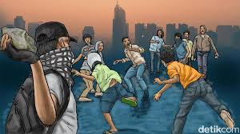

selamat datang di profil al fathir dan artikel pipas
Hindari tauran karena tauran bisa merugikan
Wah, kalau ngomong soal tawuran, itu bukan hal yang baik, ya. Tawuran biasanya berakhir dengan masalah besar
, baik fisik, hukum, atau bahkan perasaan menyesal di kemudian hari. Kalau kamu punya masalah dengan seseorang atau kelompok, lebih baik coba diselesaikan
dengan cara damai atau diskusi. Konflik nggak selalu harus dihadapi dengan kekerasan.
Cedera atau Luka: Tawuran sering berakhir dengan luka serius seperti patah tulang, pendarahan, atau bahkan cacat permanen.
Kehilangan Nyawa: Dalam banyak kasus, tawuran bisa menyebabkan kematian, baik disengaja maupun tidak disengaja.
Trauma Fisik Jangka Panjang: Cedera yang dialami mungkin memengaruhi tubuh secara permanen, mengurangi kemampuan seseorang untuk bekerja atau beraktivitas.
tauran sangat menggangu warga

Hubungan Rusak: Tawuran bisa menghancurkan hubungan baik antarindividu, keluarga, atau komunitas.
Stigma Negatif: Pelaku tawuran sering dicap buruk oleh masyarakat, seperti "preman" atau "pembuat onar," sehingga sulit diterima di lingkungan.
Kerusakan Lingkungan: Biasanya saat tawuran, properti umum atau pribadi seperti kendaraan, toko, atau fasilitas umum ikut dirusak.
pengertian
Tauran adalah istilah yang biasa digunakan untuk menggambarkan perkelahian atau bentrokan antara dua kelompok, baik itu kelompok remaja, pelajar, atau masyarakat tertentu. Biasanya, tauran terjadi karena adanya konflik, perselisihan, atau perbedaan pendapat yang tidak terselesaikan dengan baik.
Tauran sering dikaitkan dengan tindakan kekerasan, penggunaan senjata, dan dapat menimbulkan kerugian baik fisik maupun material, termasuk kerugian pada lingkungan sosial. Tindakan ini umumnya dianggap melanggar hukum dan norma masyarakat.
penyebab
Permasalahan Pribadi atau Kelompok
Konflik kecil seperti kesalahpahaman, persaingan, atau penghinaan dapat berkembang menjadi perkelahian antarindividu yang melibatkan kelompok masing-masing.
solusi
Mengintegrasikan pendidikan tentang nilai-nilai kedamaian, empati, dan toleransi dalam kurikulum sekolah.
Memberikan pelatihan tentang pengelolaan emosi dan penyelesaian konflik secara damai.
Orang tua perlu memberikan perhatian lebih terhadap anak-anak, terutama dalam membangun komunikasi yang baik dan memberikan teladan positif.
kesimpulan
Tawuran itu cuma merugikan, untuk diri sendiri, keluarga, dan masyarakat. Daripada buang waktu dan energi untuk hal negatif, lebih baik cari cara lain untuk menyelesaikan masalah. Misalnya, melalui dialog, mediasi, atau fokus ke kegiatan yang positif seperti olahraga, seni, atau belajar skill baru.
Kalau kamu lagi ngerasa emosi atau ada masalah yang bikin kepikiran, boleh cerita di sini. Aku siap bantu kasih saran yang lebih baik! 😊
.jpg)